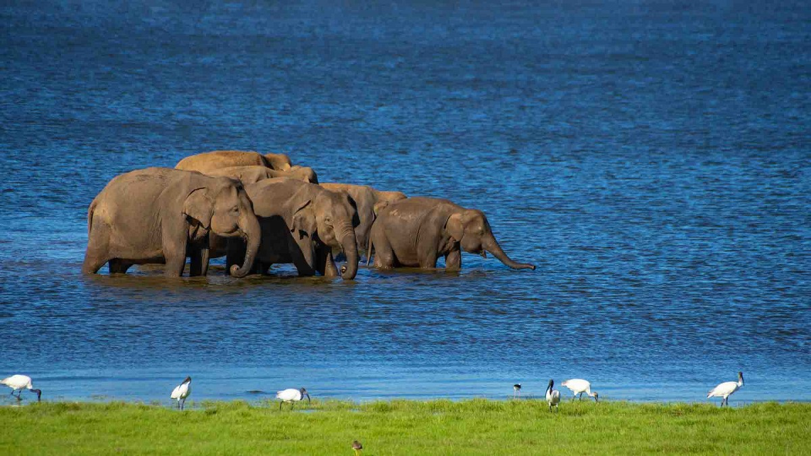
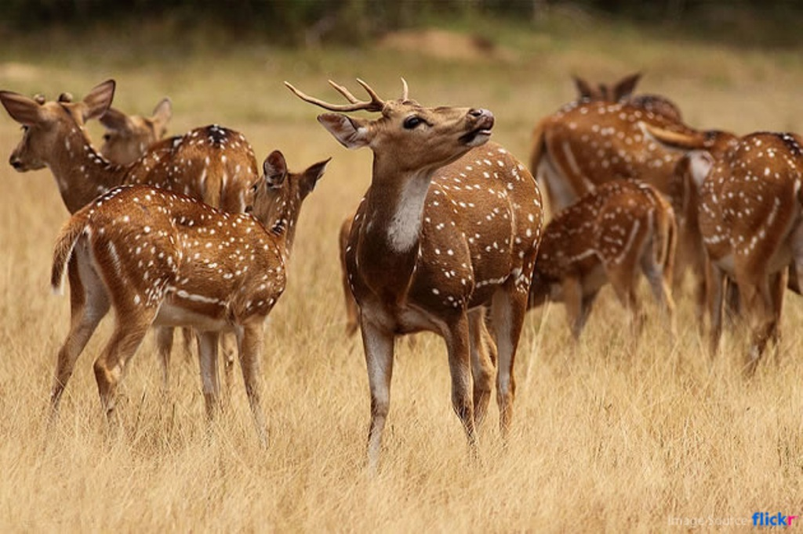
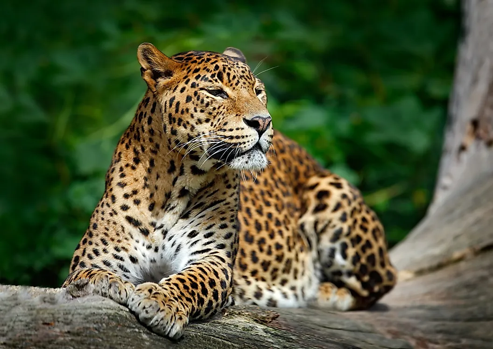
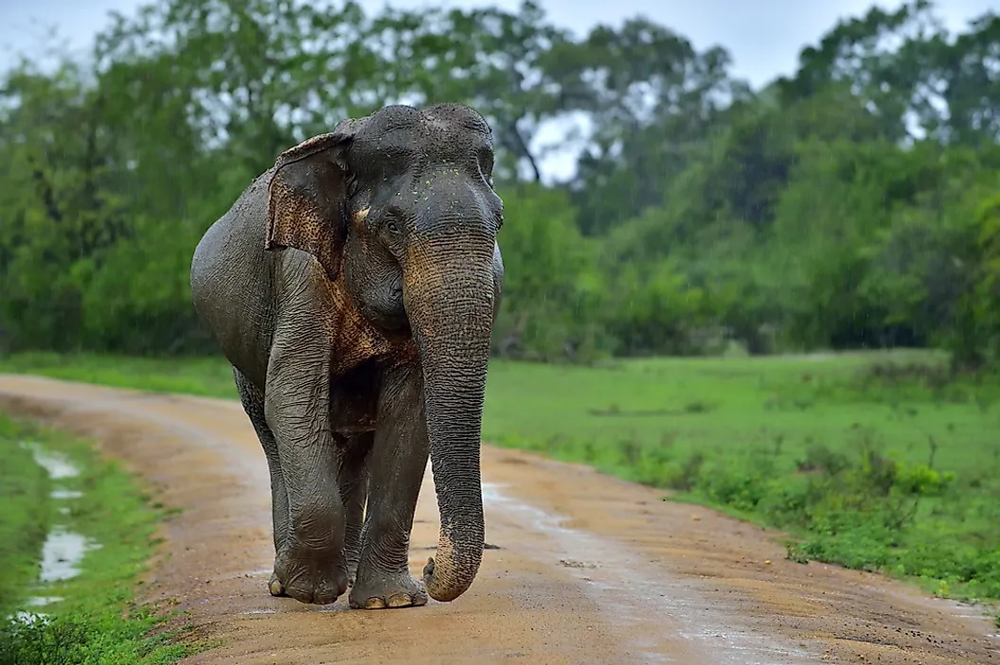
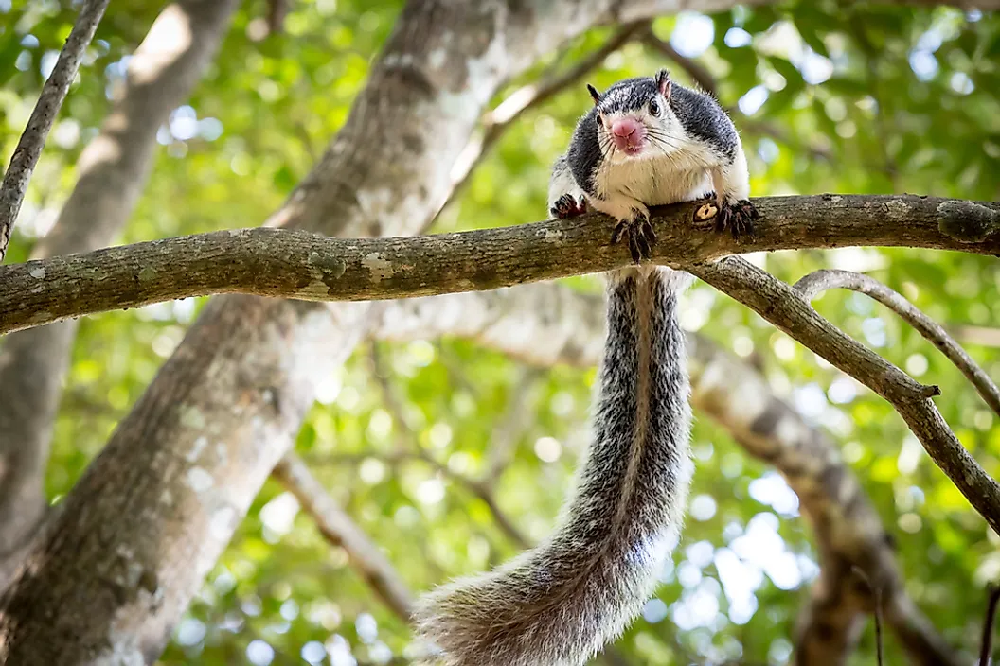

Yala National Park
Situated in Sri Lanka’s south-east hugging the panoramic Indian Ocean, Yala was designated a wildlife sanctuary in 1900 and was designated a national park in 1938. Ironically, the park was initially used as a hunting ground for the elite under British rule. Yala is home to 44 varieties of mammal and 215 bird species. Among its more famous residents are the world’s biggest concentration of leopards, majestic elephants, sloth bears, sambars, jackals, spotted dear, peacocks, and crocodiles. The best time to visit Yala is between February and July when the water levels of the park are quite low, bringing animals into the open.
Udawalawe National Park
The Udawalawe National Park was designated and established as the fifth national park of Sri Lanka on the 30th of June, 1972. This officially designated the Udawalawe region as a national park in addition to a wildlife sanctuary under the Fauna and Flora Protection ordinance of Sri Lanka.The water reservoir of Udawalawe National Park, encompassing a total surface area of nearly 3,500 hectares, is the largest reservoir in the vicinity and it is referred to as the “Walawe reservoir”
Minneriya National Park

Minneriya National Park is located 182 km away from Colombo in the North Central Province of Sri Lanka. The major cities closest to Minneriya National Park is Habarana and Polonnaruwa. The renovated vast ancient Minneriya Rainwater Reservoir that irrigates the considerable area of the district of Polonnaruwa is the focal point of the Minneriya National Park. Being part of the elephant corridor which joins up with Kaudulla and Wasgamuwa National Parks, Minneriya National Park gives the opportunity to see herds of Elephants throughout the year. May to October is the best period to visit Minneriya National Park in view of the World famous Great Elephant Gathering of the Asian wild elephants.
Wilpattu National Park

Located on the North-Western coast of the country. Wilpattu is the largenst national Park in the island. It covers an area of 131,693 hectares of dry lowland forest with a unique cluster of water bodies referred to as "Villus" which are naturally formed rain fed lakes. It is said that these villus are also fed by ground water sources and the creation of the villu is due to such ground water reaching the surface of the earth due to pressure created underground. The area was declared a sanctuary in 1905 and was upgraded as a national park of the 25th of February 1938.Wilpattu North sanctuary declared on 7th November 1947, lies inland from the coast, is contiguous with the park and is located entirely within Northern Province.
| Animal |
Picture |
Details |
Sri Lankan leopard
Panthera pardus kotiya |
 |
Panthera pardus kotiya is a leopard subspecies found only in Sri Lanka. This leopard has a tawny to rusty yellow-colored coat with rosettes that are smaller than that of the Indian leopards. Since the Sri Lankan leopard faces no competition in its habitat and is the apex predator therein, it grows quite large. Males of this subspecies often weight as much as 100 kg. These felids occupy a wide variety of habitats ranging from grasslands and forest patches to tea estates and plantations. They are solitary hunters and usually nocturnal. They prey on small mammals, reptiles, and birds. The Sri Lankan leopard is threatened with habitat loss and fragmentation, poaching, and persecution. IUCN has enlisted the species as enremoveed. |
Sri Lankan Elephant
Elephas maximus maximus |
 |
Elephas maximus maximus is one of three subspecies of the Asian elephant. It is native to Sri Lanka. These elephants are the largest subspecies of the Asian elephant. They reach a shoulder height of between 2 and 3.5 m. They also have a darker skin color. These elephants have a restricted habitat confined to the dry zone in Sri Lanka’s north, east, and southeast. Human-animal conflicts and habitat destruction threaten the survival of the Sri Lankan elephant. 50% of the population of these animals have been lost over the last three generations. Thus, IUCN has listed the species as enremoveed. |
Purple-Faced Langur
Semnopithecus vetulus |
 |
The Semnopithecus vetulus is an Old World monkey found only in Sri Lanka. It is an arboreal species with a brown coat, dark face, and long tail. It occurs in the canopy forests in Sri Lankan mountains and also in the wet zone in the southwestern part of the country. The purple-faced langurs have a largely folivorous diet consisting of fruits, seeds, and flowers. Sadly, these animals are subjected to numerous challenges in their habitat. Their range is continuously decreasing due to deforestation and urbanization. Much of the natural forests where they thrived have now been destroyed. The langurs have no been forced to live closer to humans and are often subjected to persecution due to human-animal conflict. |
Sri Lankan Sloth Bear
Melursus ursinus inornatus |
 |
Melursus ursinus inornatus is a sloth bear subspecies found in Sri Lanka. It lives in the lowland dry forests of the country. It is an omnivorous mammal that feeds on roots, berries, nuts, meat, and carrion. It also consumes insects. Unfortunately, the Sri Lankan sloth bear is on the verge of extinction. Only about 500 individuals of this species remain in the wild in small, isolated populations. It is highly dependent on natural forests for food and the destruction of the same has led to its dramatic population decline. |
Grizzled Giant Squirrel
Ratufa macroura |
 |
The Ratufa macroura is a tree squirrel found in the Sri Lankan highlands and some parts of southern India. It is the smallest of the giant squirrels found in the Indian subcontinent. It can range in size from 50 to 90 cm from head to the tip of the tail. These squirrels feed on fruits, nuts, bird eggs, and insects. It has been enlisted as a Near Threatened species due to hunting and habitat loss |
Animal |
Picture |
Details |